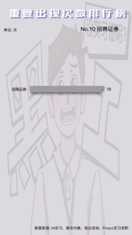

马晓婉已经成功上岸北美top前40的大学了
为了留学申请，在本科阶段没有一项实习经历的她，即使知道付费内推很坑、可能不走人事，出于申请研究生的紧迫性，她仍然选择了付费实习。
微信上的广告让她看见了留学机构，她选择了母公司已在美国上市的DBC求职机构，DBC可以提供美国不少的实习机会，在她看来这在求职机构中十分少见。在机构不断地信息分享和帮助她简历修改中，迷茫中的她成功走入远程的付费实习。
在她看来，这份付费实习经历中获得的大厂实习经历、推荐信等等对她留学申请有很大的帮助，甚至硕士毕业后，付费实习的经历也让她顺利找到美国的其他实习和全职工作。
马晓婉为化名
李玉是华北地区某间双非一本院校的学生，学习商科的他在大二时便早早立下了“留学深造”的打算。在经过广泛查阅社交媒体的经验帖后，他作下了自我规划：大二暑假一定要实习。
在大部分大学生眼中，在招聘软件、官网上投递简历争取实习岗位是一条必经之路，李玉也不例外，但海投简历终无回信，急不可耐的他在那时收到一个神秘电话。电话那头不是哪家公司的hr，而是一个自称“留学交流平台”的人，彼时需求、情绪、希望交织，他选择听从建议，实地考察了一家推荐的留学机构。“我不知道他怎么会有我的电话，我感觉我的信息被卖了”。
在实地考察中，李玉结合公司资质、环境和综合实力，以及留学中介与李玉触击灵魂的契合：“我们都讨厌一样的东西”，让他选择且十分信任这家留学机构。“我觉得找留学机构是很重要的，比如一些流程上的东西和文书撰写，他们会帮我解决，省了很多麻烦”。
留学中介结合李安的简历和需求，给他推荐了一家合作的实习内推机构。实习机构给李玉推荐了几家较好的公司，经过基础的简历优化和面试培训后，实习机构投递他的简历，但最终却以“前几家没名额”，给他推荐了较次的几家。即使觉得其中有猫腻，但出于对留学中介的信任和切身实际的需求，李玉与家人还是接受了中介的说法，并签订了金额为三万元的合同。
李玉向记者介绍，合同上有捆绑销售的嫌疑，中介声称三万元能给他安排两段实习，第一段实习单位可能一般，但第二段肯定更好，在合同上写明“八保一”，即合同上写明的八家公司中他保进其中一家。
李玉觉得合同非常好，于是在大二暑假便开启了第一段实习，去到中国中部的一家腰部的券商，实习是实地实习、走人事，有实习证明，支持背景调查和推荐信，虽然没有工资，但李玉并不在乎。“在里面我是真正工作、真正学到东西的”。
在他看来，实习导师并不知道他的来源，跟正常的实习生一样。但在实习中导师将他区别于985、211的本科生，只安排一些简单的工作，在进行争论后，导师才慢慢安排稍难的工作，结果发现李玉也能胜任。
而如今这第一段实习，他已拿到实习证明。
李玉为化名
提及共有多少人来找张宇咨询，他已经记不清了。
由于行业的特殊性，张宇能接触到大量从事商科、求职机柜的人员，于是在社交媒体做起了实习咨询博主，单一平台就有上万粉丝。在他看来，商科行业充斥着大量付费实习交易。
回顾来咨询的学生类型，他总结出四类学生：
第一类是要实现实习经历零到一的学生，他们投递简历往往没有后续。
第二类是即将要面对秋招的学生，通过刷简历争取就业机会。
第三类是刚考上研究生的学生，拥有着更高的学历则要面对企业更高的要求。
第四类是需要留学深造的学生，也是最主要的一类。
在张宇看来，付费实习“存在即合理”，怀着不同的需求，学生会选择不同的服务并得到不同的收获。但其中存在着过多猫腻，很多内推机构盖萝卜章，即假章，尤其是远程实习。“他们会给你列个清单，恨不得把全中国各行大厂企业都列进去，但哪有这么多人可以搞定程序，认识这么多人、有强关系呢？”。
付费实习每个价格对应着不同的服务，同样也对应着不同的收获。正常情况下，实地实习是付费实习价格的两倍，即使内推清单标记所有岗位可走人事可背调，可提供实习证明和推荐信，在与中介交谈中，对方也会有所含糊其辞。在张宇看来，所谓的远程实习最后，可能仅仅是中介机构或者公司内部员工简单做的邮箱背调或录用通知，经不起正式背景调查。
“赌企业不背调，没赌对学生完蛋，你找不到机构的。”
尝到了付费实习的甜头的李玉，选择在大三暑假开启他的第二段实习。实习前，他明确提出自己想去招商证券，但在几次面试后，中介都声称公司没有名额、面试没有通过，而推荐了合同“八保一”之外的公司。
李玉回忆，当时自己非常质疑中介的说法，但苦于没有证据、不想把事情闹大、怕麻烦以及觉得自己对抗不了一个公司的法律团队为由，并没有继续维权，选择了接受。“他们推的公司很不确定，取决于中介手头上的资源，因为信息差的存在，只能被动接受了；。”
就这样，李玉开启了第二段实习，来到了一家东部脖子部的券商公司，在他看来，走人事、提供实习证明、背调和推荐信都是中介默认的，但也默认没有工资。进入公司实地实习后，又因为公司告知没项目而转为线上实习，而在线上中，他觉得信息时有时无、没人管，在与留学中介说明情况后其给李玉安排了第二家实地实习的实习单位。
李玉认为，回顾自己付费实习的经历，因为信息差和切实的需求，他不得不接受了信息差带来的现实情况，不断地被中介推着走，被动地接受了他们的方案，他并不觉得付费实习是无用的，自己去到的公司招收的都是985和211的本科、硕士，如果没有付费实习，出身双非的自己恐怕难以进入目前的实习公司。即使烧钱，但付费实习仍然给予了他想要且需要的东西。
李玉为化名
回到故事的开头，你是不是很好奇：为什么会有两个身份可以选择？
以“实习内推”为关键词，我们在微信搜索里挑选了出现频率较高的4个公众号，分别是“Hi实习”、“索沃内推”、“易达咨询”和“Finacc实习求职”
针对每个公众号，我们以2022年9月-2023年9月为时间界限筛选了它们发布的有关实习内推的文章
这些文章总共提到了481次公司名字，其中有77家公司至少上榜两次

在重复出现次数排行榜中，我们惊奇地发现：排名前十的恰恰就是商科企业和互联网企业，并且这两类企业各占5席。
换个角度看，这样的分布也能在一定程度上说明：商科专业和互联网专业的同学对“付费实习”需求最大。翻看社交媒体上讨论热度较高的内容，这样的倾向十分明显。
为了更好地理解参与“付费实习”的同学的处境，我们和几位同学简单聊了一下，接下来让我们倾听他们的声音。